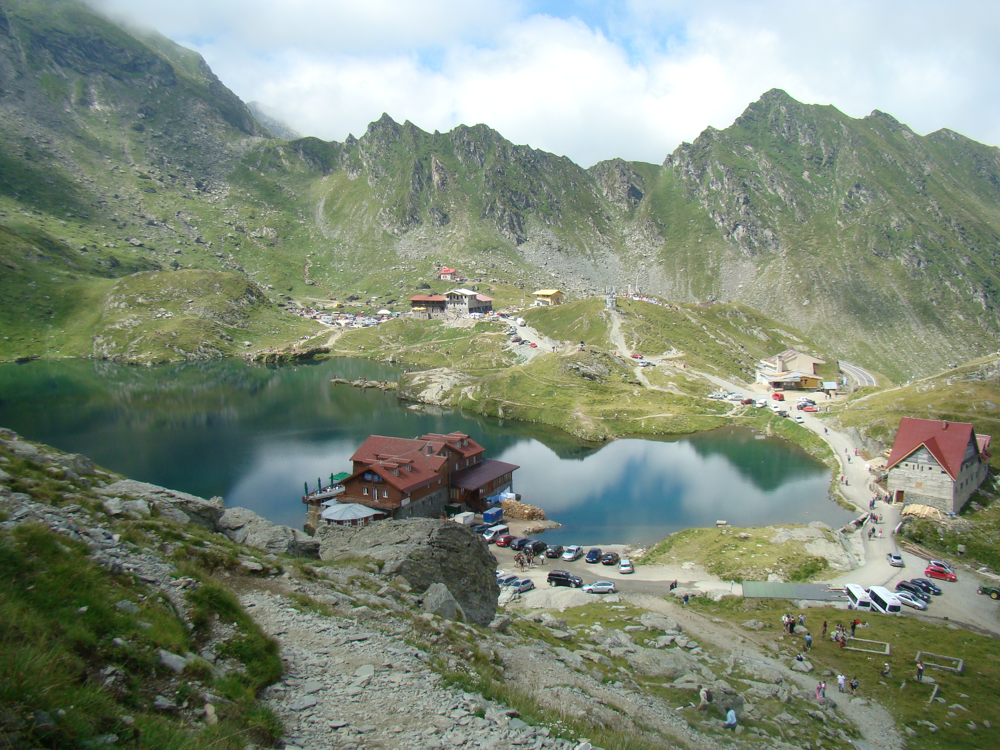

Descriere
Drumul Naţional 7C (DN7C), supranumit Transfăgărăşan leagă Muntenia cu Transilvania, străbătând Munţii Făgăraş, cei mai înalţi din România, care fac parte din Carpaţii Meridionali. Este un drum asfaltat, ajungând în apropierea tunelului de lângă Lacul Bâlea la altitudinea de 2042 m. Astfel, Transfăgărăşanul se situează pe locul al doilea ca altitudine în clasamentul şoselelor alpine din România, după Transalpina (DN67C) din Munţii Parâng, care urcă până la 2145 m. Transfăgărăşanul a fost construit între anii 1970 – 1974, la iniţiativa lui Nicolae Ceauşescu. în notele de fundamentare a proiectului se menţionează, totodată, ca motive "deschiderea bazinelor forestiere din masivul Făgăraş, folosirea mai raţională a păşunilor alpine şi realizarea unui centru turistic montan în zona Lacului Bâlea" . Drumul porneşte din comuna Bascov de lângă Piteşti şi urcă valea râului Argeş, trecând prin oraşul Curtea de Argeş. La nord de oraş, drumul trece prin faţa hidrocentralei Vidraru, amplasată în masivul Cetăţuia. De aici, în apropierea cetăţii Poenari, drumul urcă pe serpentine şi viaducte şi ajunge pe Barajul Vidraru. Trecând barajul, drumul continuă pe partea stângă a lacului Vidraru până la coada acestuia. în continuare, drumul începe să urce urmând cursul văii râului Capra până la ajungerea în golul alpin, lângă Cabana Capra; după o serie de serpentine, trecând prin dreptul Cascadei Capra, ajunge până la intrarea sudică a tunelului Capra-Bâlea. în partea nordică a drumului, Transfăgărăşanul trece prin rezervaţia naturală Golul Alpin al Munţilor Făgăraş între Podragu-Suru şi Valea Bâlii, pe lângă lacul glaciar Bâlea, după care urmează o coborâre abruptă în serpentine, străbătând căldarea glaciară, pe o lungime de 13 km. Apoi, drumul trece prin apropierea cascadei Bâlea, o cascadă în trepte de aproximativ 68 m, cea mai mare de acest fel în România, aflată la altitudinea de aproximativ 1230 m, ajungând apoi la Cabana Bâlea Cascadă.
După foarte multe serpentine și un urcuș mare se ajunge la Bâlea Lac, punctul de înălțime maximă de pe Transfăgărășan. Lacul Bâlea este un lac glaciar, format în circ glaciar, adică s-a format într-o depresiune înconjurată de masive muntoase înalte. Lacul este situat la o altitudine de 2040 de metri, are o lungime de 360 de metri, o suprafață de 4,6 hectare și o adâncime de aproximativ 11 metri. Lângă lac se află mai multe cabane; prima cabana a fost ridicată în anul 1904. Iarna, când drumul Transfăgărășan este închis, accesul la Bâlea Lac se face cu telecabina de la Cabana Bâlea Cascadă. Tot iarna, timp de trei luni, funcționează Hotelul de Gheață de la Bâlea Lac, unul dintre puținele hoteluri de gheață din Europa de Est. Primul hotel a fost realizat în anul 2006 iar de atunci tradiția se repetă în fiecare an. Hotelul este construit sub forma unui iglu, are în jur de 14 – 16 camere, și există și un bar construit în gheață. Experiența de a petrece o noapte aici este unică, singurul inconvenient fiind frigul și hainele groase; nici prețul nu este chiar cel mai accesibil, dar, având în vedere unicitatea hotelului, merită.
